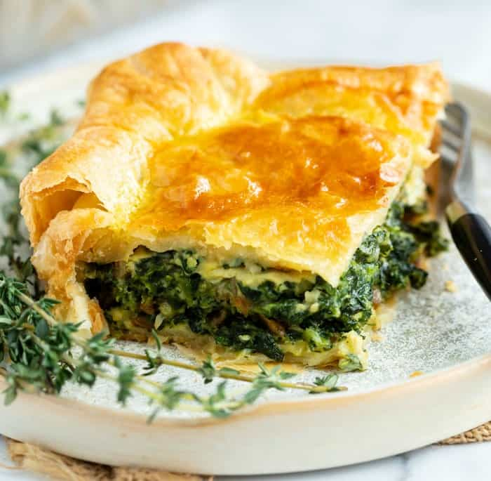

Ingredients
- 2 big onions chopped
- 4 beaten eggs
- 3 tablespoons margerine
- 2 cups cheddar cheese
- 500g chopped spinach
- salt and pepper
- Puff Pastry
Recipe instructions
- Pre-heat oven to 180°C.
- Boil the spinach in salt water for 20 minutes, then drain.
- Fry the chopped onion in the margerine till golden.
- Add the cooked spinach, and the cheddar cheese and toss in the pot.
- Add the beaten eggs and salt and pepper to taste.
- Line an oven dish with puff pastry and pour in the pie filling.
- Cover with a layer of puf patry and brush with egg.
- Bake in the oven till golden brown.
Return to top
Return to main page